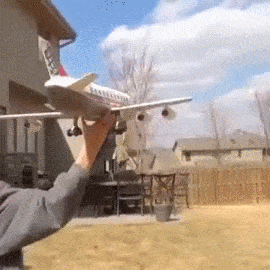

The Moneyballers -- The injuries keep piling up for Coach Mochrie and his crew, but he managed a squeaky win to put him top of the mountain anyway. It didn’t hurt that he was playing the team ‘Shitbag Titty Fuck’, but regardless--even if things look bleak for the future of this team, it’s the only 4-1 team so I decided to put him up here regardless. Enjoy it while it lasts.
Total Football -- There’s something about the shining greatness of this team that inspires opposition to play far above their usual level, and that bit them this week when the Silly Boys decided to fuck around and score the most points they’ll ever score against them. Despite a great performance and a great team, Coach Smith was defeated, falling to 3-2. He isn’t worried, though.
Roc Silly Boys -- Even if this performance was ridiculously unsustainable, it dropped both jaws and panties alike as Coach Gloss performed a miracle win, reigniting his role in the playoff race. When asked about it in the postgame, he said, “I just want to thank God and Michael Thomas. Please keep doing lots of scores.”

Drunk Taylor Swift -- As was foretold last week, Erin bitchslapped her brother in the week 5 showdown between siblings. So long as she remains tethered to the Green Bay Packers, things are looking bright for this squad.
Brokeback Boolers -- As it turns out, drinking forty-six celebratory genny cream ales after going 3-0 results in a hangover that lasts for the rest of the Football season. Now on a two-game skid and desperately shopping his star players, Coach Clancy was last seen screaming at Travis Kelce for not single-handedly winning him this week’s matchup. Success was always too good to be true.

Beane’s Boolers -- This team remains where it was last week, despite winning, because a win against Alex isn’t really a win at all, so much as ‘not a loss’. Who knows how this team’s season will go? Well, not me. And certainly not Coach Encina.
The Fournetteicatorz -- This otherwise forgettable team has sneakily put together a mediocre string of victories. Is anyone scared of playing them? No. Can they make playoffs? It’s certainly possible. Do I think they will? Also no.
James -- Just when we started to think Coach Moore was putting together a steady team, he comes out with an embarrassing performance rivaling some of the worst we’ve seen. It was an Alex-tier performance.
Shitbag Titty Fuck -- For a second there, it actually looked like you were going to win, so I’ll give you brownie points for that. Still, though, to call you an outsider for playoffs at this point would be generous. Coach Mungillo needs to make moves, and fast--his star player Patrick Mahomes has been on a weaker run ever since his trade request was denied. Not only has he lost a lot of games, but he’s lost his own fantasy team’s locker room.
Barkley Reincarnated -- Coach Glatz summed it up for all of us on Monday night when he said, simply, “I’m just not meant to win”. Back to the bottom of the rankings with you.